第十二章 无穷级数
在初等代数中，加法运算只能针对有限多个数进行；然而，在微积分学与现代物理分析中，我们必须把加法运算推广到无限多个项相加的情形——这就是无穷级数（Infinite Series）. 级数是高等数学中表示函数、研究函数性态以及进行高精度数值计算的核心工具. 例如，圆周率 $\pi$、自然常数 $e$、以及三角函数、对数函数的数值计算与芯片内算法，全部基于无穷级数的逼近理论. 本章将首先建立常数项级数的敛散性概念，系统讨论正项级数审敛法与交错级数的莱布尼茨判据；进而研究以幂函数为基底的幂级数，推导函数展开为泰勒级数的充要条件；最后，建立以正弦与余弦正交三角函数系为基底的傅里叶级数（Fourier Series），为信号频域分解与热传导、波动方程等偏微分方程的求解奠定关键数学基础.
第一节 常数项级数的概念和性质
一、无穷级数与部分和的定义
给定一个数列 $u_1, u_2, u_3, \dots, u_n, \dots$，将它的所有项用加号连接起来的无限表达式：
$$\sum_{n=1}^\infty u_n = u_1 + u_2 + u_3 + \dots + u_n + \dots$$
称为常数项无穷级数（简称级数），其中 $u_n$ 称为级数的通项（或一般项）.
级数的前 $n$ 项之和 $s_n = \sum_{k=1}^n u_k = u_1 + u_2 + \dots + u_n$ 称为级数的部分和. 当 $n$ 无限增大时，如果部分和数列 $\{s_n\}$ 的极限存在，即
$$\lim_{n \to \infty} s_n = s$$
那么称无穷级数 $\sum_{n=1}^\infty u_n$ 收敛，并称极限值 $s$ 为级数的和，记作 $\sum_{n=1}^\infty u_n = s$. 如果 $\{s_n\}$ 的极限不存在，则称级数发散（图 12-1）.
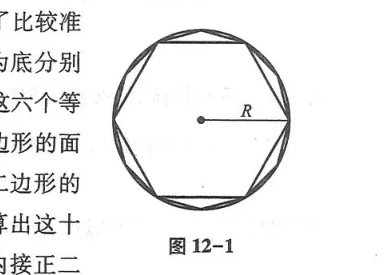
等比级数（几何级数）：$\sum_{n=0}^\infty a q^n = a + aq + aq^2 + \dots$ ($a \ne 0$)：
- 当 $|q| < 1$ 时，级数收敛，和为 $s = \frac{a}{1 - q}$；
- 当 $|q| \ge 1$ 时，级数发散.
若级数 $\sum_{n=1}^\infty u_n$ 收敛，则其通项趋于零：$\lim_{n \to \infty} u_n = 0$.
逆否命题：若 $\lim_{n \to \infty} u_n \ne 0$（或极限不存在），则级数必发散！但通项趋于零绝不能保证级数收敛（如调和级数 $\sum \frac{1}{n}$ 发散）.
第二节 常数项级数的审敛法
一、正项级数审敛法
每一项都非负（$u_n \ge 0$）的级数称为正项级数. 正项级数收敛的充分必要条件是其部分和数列 $\{s_n\}$ 有界.
- 比较审敛法（极限形式）：设 $\sum u_n, \sum v_n$ 为正项级数，若 $\lim_{n \to \infty}\frac{u_n}{v_n} = l$：
- 若 $0 < l < +\infty$，则两级数同敛散；
- 基准级数：$p$-级数 $\sum_{n=1}^\infty \frac{1}{n^p}$，当 $p > 1$ 时收敛，当 $p \le 1$ 时发散（图 12-2）；
- 比值审敛法（达朗贝尔判别法 D'Alembert）：设 $\lim_{n \to \infty} \frac{u_{n+1}}{u_n} = \rho$：
- $\rho < 1$ 时收敛；$\rho > 1$ 时发散；$\rho = 1$ 时失效；
- 根值审敛法（柯西判别法 Cauchy）：设 $\lim_{n \to \infty} \sqrt[n]{u_n} = \rho$：
- $\rho < 1$ 时收敛；$\rho > 1$ 时发散；$\rho = 1$ 时失效；
- 积分审敛法：若 $f(x)$ 在 $[1, +\infty)$ 上非负单调递减，则 $\sum_{n=1}^\infty f(n)$ 与反常积分 $\int_1^{+\infty} f(x)dx$ 同敛散（图 12-3）.
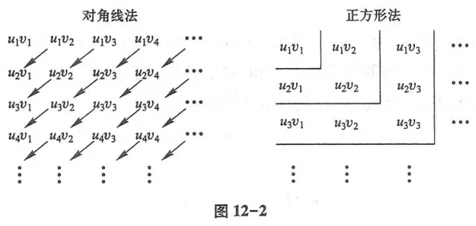
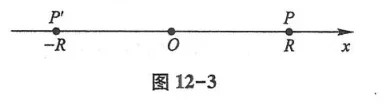
二、交错级数与绝对收敛
正负项交替出现的级数 $\sum_{n=1}^\infty (-1)^{n-1} u_n = u_1 - u_2 + u_3 - u_4 + \dots$ ($u_n > 0$) 称为交错级数.
若交错级数满足：(1) $u_n \ge u_{n+1}$（单调递减）；(2) $\lim_{n \to \infty} u_n = 0$，则该交错级数必收敛，且其和 $s \le u_1$，余项误差截断满足 $|r_n| \le u_{n+1}$（图 12-4）.
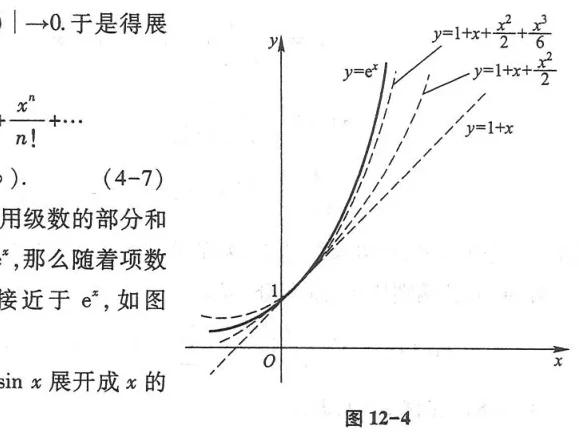
绝对收敛与条件收敛：若 $\sum |u_n|$ 收敛，称原级数 $\sum u_n$ 绝对收敛；若 $\sum u_n$ 收敛但 $\sum |u_n|$ 发散，称原级数条件收敛.
第三节 幂级数
一、阿贝尔定理与收敛半径
形如 $\sum_{n=0}^\infty a_n (x - x_0)^n$ 的函数项级数称为幂级数.
如果级数 $\sum a_n x^n$ 当 $x = x_0$ ($x_0 \ne 0$) 时收敛，则对满足 $|x| < |x_0|$ 的一切 $x$，该级数必绝对收敛；反之，若在 $x = x_1$ 时发散，则对满足 $|x| > |x_1|$ 的一切 $x$，该级数必发散（图 12-5、图 12-6）.
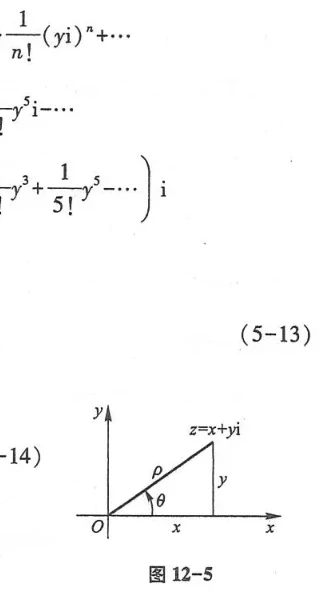
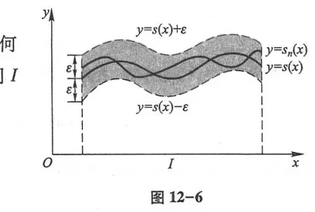
收敛半径计算公式：设 $\lim_{n \to \infty} \left|\frac{a_{n+1}}{a_n}\right| = \rho$，则收敛半径 $R = \frac{1}{\rho}$（规定 $\frac{1}{0} = +\infty, \frac{1}{+\infty} = 0$）.
二、和函数的优良分析性质
- 连续性：和函数 $s(x) = \sum_{n=0}^\infty a_n x^n$ 在收敛区间 $(-R, R)$ 内处处连续；
- 逐项求导：$s'(x) = \sum_{n=1}^\infty n a_n x^{n-1}$，逐项求导后收敛半径保持不变（图 12-7）；
- 逐项积分：$\int_0^x s(t)dt = \sum_{n=0}^\infty \frac{a_n}{n+1} x^{n+1}$，逐项积分后收敛半径保持不变.
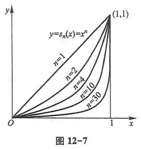
第四节 函数展开成幂级数
五大核心初等函数的麦克劳林展开式（图 12-8）：
- $e^x = \sum_{n=0}^\infty \frac{x^n}{n!} \quad (-\infty < x < +\infty)$
- $\sin x = \sum_{n=0}^\infty (-1)^n \frac{x^{2n+1}}{(2n+1)!} \quad (-\infty < x < +\infty)$
- $\cos x = \sum_{n=0}^\infty (-1)^n \frac{x^{2n}}{(2n)!} \quad (-\infty < x < +\infty)$
- $\frac{1}{1 - x} = \sum_{n=0}^\infty x^n \quad (-1 < x < 1)$
- $\ln(1 + x) = \sum_{n=1}^\infty (-1)^{n-1} \frac{x^n}{n} \quad (-1 < x \le 1)$
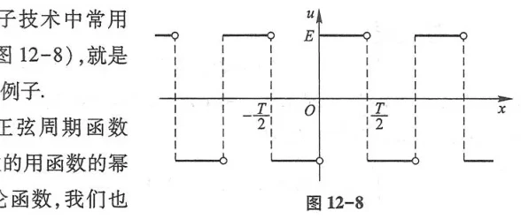
第六节与第七节 傅里叶级数
一、三角函数系的正交性
三角函数系 $\{1, \cos x, \sin x, \cos 2x, \sin 2x, \dots, \cos nx, \sin nx, \dots\}$ 在区间 $[-\pi, \pi]$ 上具有正交性：任意两个不同函数乘积在 $[-\pi, \pi]$ 上的积分恒等于零；而自身平方的积分等于 $\pi$（对 $1$ 为 $2\pi$）. 这构成了傅里叶分析的正交基底.
二、傅里叶级数展开与狄利克雷收敛定理
设以 $2\pi$ 为周期的周期函数 $f(x)$ 在一个周期 $[-\pi, \pi]$ 上满足：(1) 连续或只有有限个第一类间断点；(2) 只有有限个极值点. 那么 $f(x)$ 的傅里叶级数必收敛：
$$f(x) \sim \frac{a_0}{2} + \sum_{n=1}^\infty (a_n \cos nx + b_n \sin nx)$$
在连续点处收敛于 $f(x)$；在间断点 $x_0$ 处收敛于平均值 $\frac{f(x_0^-) + f(x_0^+)}{2}$（图 12-9、图 12-10、图 12-11、图 12-12）.
欧拉-傅里叶系数公式：
$$a_n = \frac{1}{\pi}\int_{-\pi}^\pi f(x)\cos nx dx \quad (n = 0, 1, 2, \dots), \qquad b_n = \frac{1}{\pi}\int_{-\pi}^\pi f(x)\sin nx dx \quad (n = 1, 2, \dots)$$
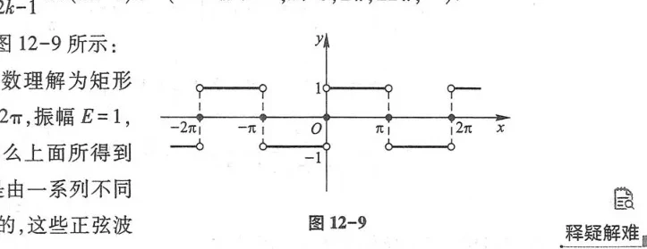
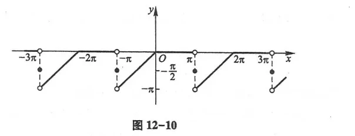
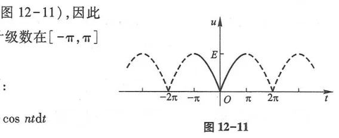
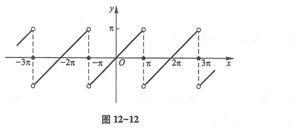
三、正弦级数与余弦级数（半程延拓）
对于定义在 $[0, \pi]$ 或 $[0, l]$ 上的非周期函数，可以通过奇延拓展开为只含正弦项的正弦级数，或通过偶延拓展开为只含余弦项的余弦级数（图 12-13、图 12-14、图 12-15、图 12-16）.
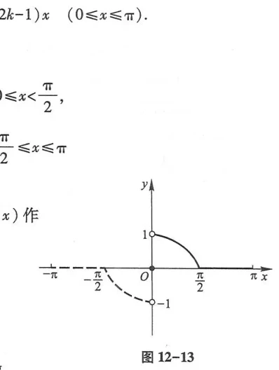
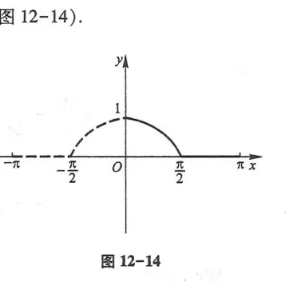
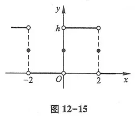
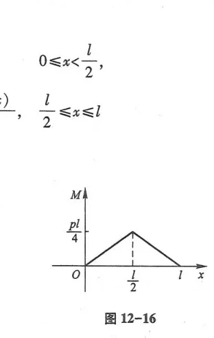
四、复数形式的傅里叶级数
利用欧拉公式 $\cos\theta = \frac{e^{i\theta} + e^{-i\theta}}{2}, \sin\theta = \frac{e^{i\theta} - e^{-i\theta}}{2i}$，傅里叶级数可以高度紧凑地表示为双边复指数级数（图 12-17）：
$$f(t) = \sum_{n=-\infty}^{+\infty} c_n e^{i n \omega_0 t}, \qquad c_n = \frac{1}{T}\int_{-\frac{T}{2}}^{\frac{T}{2}} f(t)e^{-i n \omega_0 t}dt$$
这一公式直接通向了现代通信与信号处理的基石——傅里叶变换（Fourier Transform）.
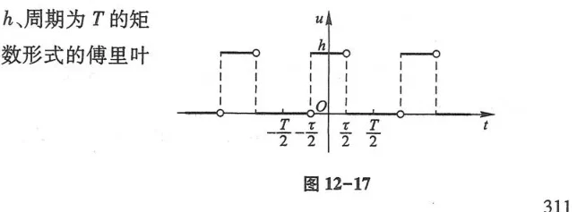
总习题十二
1. 判别级数 $\sum_{n=1}^\infty \frac{n!}{n^n}$ 的敛散性.
解：应用达朗贝尔比值判别法：
$\lim_{n \to \infty} \frac{u_{n+1}}{u_n} = \lim_{n \to \infty} \frac{(n+1)!}{(n+1)^{n+1}} \cdot \frac{n^n}{n!} = \lim_{n \to \infty} \left(\frac{n}{n+1}\right)^n = \lim_{n \to \infty} \frac{1}{(1 + \frac{1}{n})^n} = \frac{1}{e}$.
因为 $\frac{1}{e} < 1$，所以由比值审敛法，该级数收敛.
2. 求幂级数 $\sum_{n=1}^\infty \frac{x^n}{n \cdot 2^n}$ 的收敛域与和函数.
解：$a_n = \frac{1}{n 2^n}$，收敛半径 $R = \lim_{n \to \infty} \left|\frac{a_n}{a_{n+1}}\right| = \lim \frac{(n+1)2^{n+1}}{n 2^n} = 2$.
端点检验：当 $x = 2$ 时，$\sum \frac{1}{n}$ 发散；当 $x = -2$ 时，$\sum \frac{(-1)^n}{n}$ 收敛.
故收敛域为 $[-2, 2)$.
求和函数：记 $s(x) = \sum_{n=1}^\infty \frac{x^n}{n 2^n}$，逐项求导：
$s'(x) = \sum_{n=1}^\infty \frac{x^{n-1}}{2^n} = \frac{1}{2}\sum_{n=1}^\infty \left(\frac{x}{2}\right)^{n-1} = \frac{1}{2} \cdot \frac{1}{1 - \frac{x}{2}} = \frac{1}{2 - x}$ ($|x| < 2$).
积分并利用 $s(0) = 0$：$s(x) = \int_0^x \frac{dt}{2 - t} = -\ln(1 - \frac{x}{2})$. 连续延拓到 $x = -2$，和函数为 $-\ln(1 - \frac{x}{2})$ ($x \in [-2, 2)$).